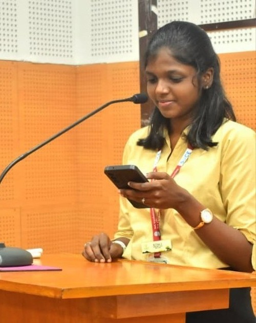
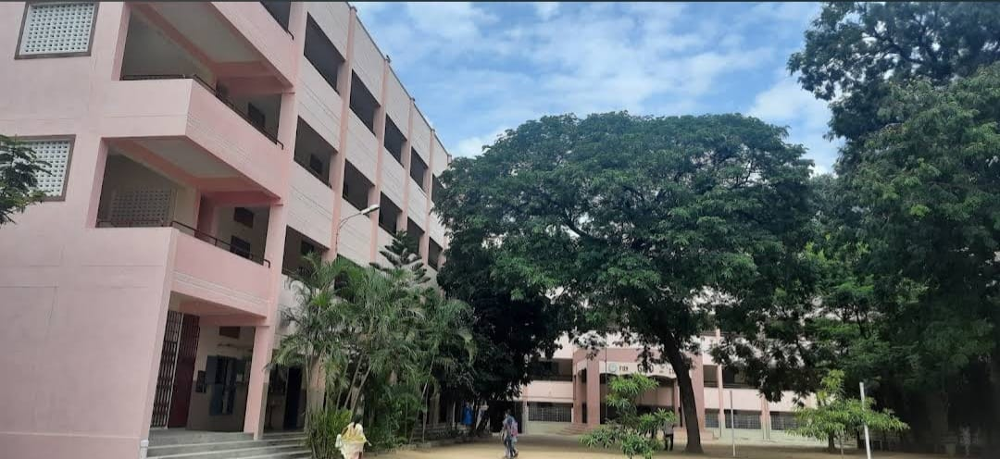
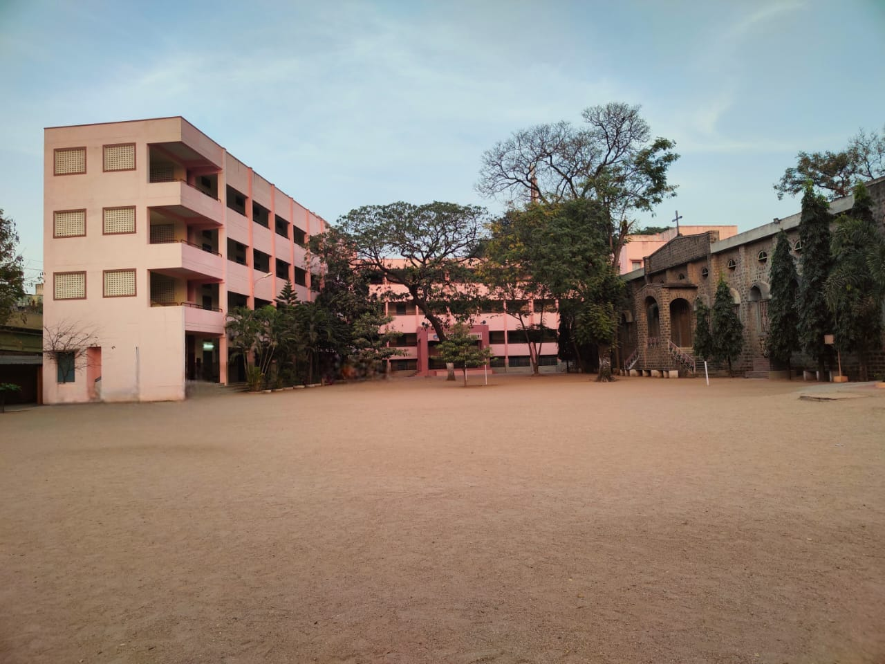
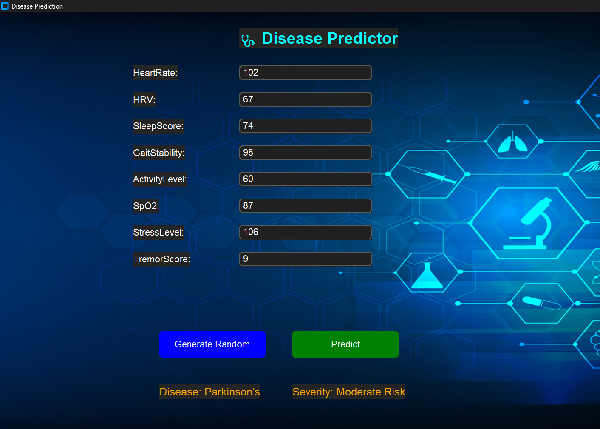
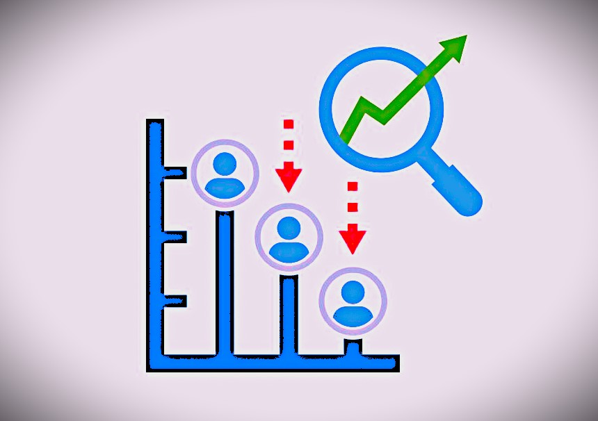

A driven and passionate Aspiring Software Engineer with a strong enthusiasm for technology, problem-solving, and innovation. I am committed to delivering high-quality solutions through analytical thinking and creativity.

EDUCATION
SSLC
St'Mary's GHSS
Passed Out Year: 2021

HSC
St'Mary's GHSS
Passed Out Year: 2023
Percentage: 97%

B.Tech AI & DS
Sri Venkateswara College of Engineering
Year of Graduation: 2027
9.55*(Upto VI sem)
SKILLS
Languages
- C++
- Java(basics)
- Python(basics)
Frontend
- HTML
- CSS
- JS
- Responsive web design
Backend
- MySQL
Concepts
- Machine Learning
- OOPS
Soft Skills
- Communication
- Teamwork
- Leadership
- Problem Solving
PROJECTS
Neuro Disease Detection
Built a wearable-device interface and ML-based backend to detect early signs of neurodegenerative diseases using smartwatch sensors.
- Machine Learning
- Python(Tkinter)

Green Plate Website
Developed a static, responsive website for an eco-friendly food delivery service, focusing on clean UI and accessibility.
- Frontend: HTML,CSS,JS
- Backend: Python
Customer Churn Prediciton
Formulated a predictive analytics solution utilizing machine learning models to identify at-risk customers, enabling proactive retention strategies for improved customer loyalty.
- Python
- Machine Learning

Smart Carbon Tracking Website
Developed an interactive frontend that calculates carbon emission from food,electricity and transport usage and visualize insights using weekly and monthly charts.
- Frontend: HTML,CSS,JS

Credit Card Fraud Detection
Developed a machine learning framework to enhance transactional security and reduce unauthorized activities.
- Machine Learning
- Python
SMS Spam Detection
This project focuses on SMS Spam Detection using Python. It provides detailed visualizations to understand the dataset and highlight differences between spam and ham messages.
- Machine Learning
- Python

Hospital Appointment System
Developed a desktop GUI-based system for scheduling and managing hospital appointments using object-oriented principles.
- Python(Tkinter)
- MySQL